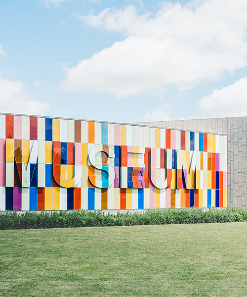

HOME>기관소개>인사말
인사말
서대문자연사박물관은 방문하신 여러분을 진심으로 환영합니다.
지구의 역사가 46억년이라는 점을 감안할 때 고작 20만 년전에 출현한 우리 인류의 역사는 매우 짧습니다. 그럼에도 우리는 무한한 호기심으로 자연의 역사, 즉 자연사를 연구해 왔습니다. 이러한 과거에 대한 발견은 미래를 모델링하고 예측하는 데 도움이 됩니다.
이를 위해 자연사박물관에서는 시간적 및 공간적 순간들을 반영하는 표본을 수집하여 보존하고 있습니다. 그리고 이 순간에도 우리는 천문학, 지질학, 고생물학, 동물학, 식물학, 인류학 등 지구가 품고 있는 모든 것의 이야기로부터 새롭고 중요한 정보를 계속 모아 연구를 하고, 이를 바탕으로 전시와 교육을 하고 있습니다.

서대문자연사박물관은 2003년 개관한 우리나라 최초의 공립 자연사박물관입니다. 개관이후 지난 17년 동안 우리 서대문자연사 박물관은 지속적으로 표본을 수집하여 45,000여 점을 소장하고있습니다. 다양한 전시회와 교육 프로그램을 통해 연간 35만 명의 방문객들과 자연사 지식을 공유하며, 과학, 자연 및 문화 세계를 인식시키는데 노력해왔습니다.그 결과 서대문자연사박물관은 명실 공히 수도권의 대표적인 자연사박물관으로 자리 잡게 되었습니다.
서대문자연사박물관이 더욱 발전하기 위해서는 학예사와 직원들의 노력 뿐 아니라 여러분들의 적극적 참여와 활동이 필요합니다. 지속가능한 자연과 인간의 미래를 위해 자연사에 대해 끊임없이 많은 관심을 기울여 주시기 바랍니다. 서대문자연사박물관장 이남숙